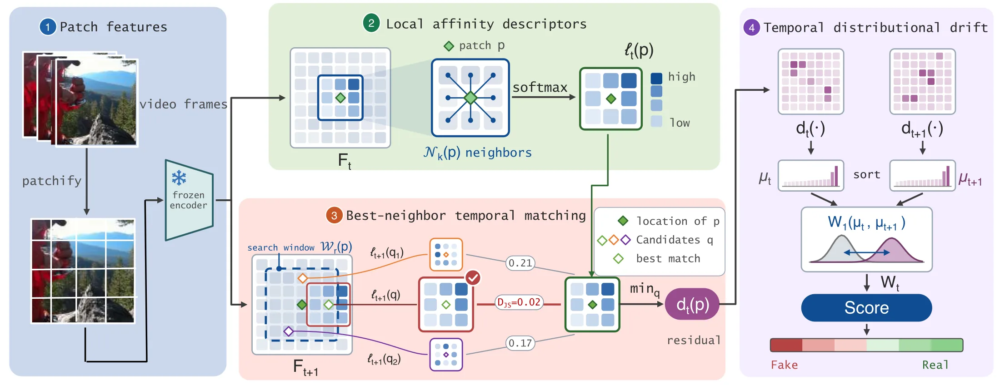

LENS: Too Much of Hidden “Smoothness” in AI‑Generated Videos
Figure 1. A real video (left) and a generated video (right) with a similar amount of motion, over the two seconds LENS analyses. The heatmap shows the per-patch residual dt(p): how much the local neighbourhood structure of a patch changes once its motion is discounted. The curve below each video is the Wasserstein distance Wt between the residual distributions of consecutive frames.
Abstract
We aim to detect AI-generated videos without assuming knowledge about the generative model that generated the video. Existing approaches typically use global representations for each video frame and look for patterns in their temporal evolution. Understandably, global representations lose local structural variations, causing detectors to collapse many fine-grained temporal changes into coarse-grained motion. Our idea is to factor out coarse-grained motion and focus on how the relationships between local/neighboring image patches warp between consecutive frames. We call this “residual” motion and find that its distribution over the local neighborhoods diverges slowly, smoothly, in AI-generated videos. In comparison, real videos are far less smooth along that same residual divergence metric, offering an imperceptible signature to separate real from fake. Exactly why an AI model learns this smoothness is difficult to tell; we speculate that generative models tend to under-estimate the independence in motion dynamics among real-world objects. We evaluate our proposed detector, Local Evolution of Neighborhood Structures (LENS), across 4 benchmarks covering 37 generator subsets.
Method
LENS describes every patch by its affinities to its neighbouring patches, discounts the patch’s motion by matching it within a small window of the next frame, and keeps what remains as the residual. It then compares the distribution of residuals between consecutive frames with the Wasserstein distance. Because the distance compares sorted residuals, it does not depend on where patches moved, only on how the local structure changed.

-
A frozen pretrained encoder maps each frame to a 14 × 14 grid of patch features.
-
Each patch is described by its affinities to its eight neighbours.
-
The descriptor is matched within a 5 × 5 window of the next frame. The smallest Jensen–Shannon divergence is the residual.
-
The residual distributions of adjacent frames are compared with the Wasserstein distance; its mean over time is the video score.
Figure 3. The four steps on one frame pair of the real video in Figure 1. Select a step to show it.
Visualization
Sorted residuals of frame pairs t and t + 1
Wasserstein distance Wt over time
Figure 4. Residuals of a single clip; select another clip from the row above. Left: the clip with its per-patch residual heatmap; drag the slider to step through the frame pairs. Top right: the sorted residuals of the current frame pair (solid) and the next one (dashed); the shaded area between them is the Wasserstein distance Wt. Bottom right: Wt over the two seconds, with the current frame pair marked.
More examples
Real and generated clips from AIGVDBench, EvalCrafter, GenVideo and VideoPhy-2. Hover over or tap a clip to show its residual heatmap; the curve below each clip is Wt over time, on a common scale.